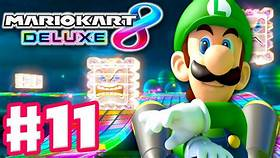

Overview
Mario Kart 8 Deluxe is a kart racing video game. This game has lots of nominations, this is one of the nintendo switch best sellers game. You can play this game with up to 8 players in local wireless multiplayers. This is also an online multiplayers game. This game is rated and appropriate for everyone. If you have a switch you can play it on the tv, or tabletop mode or handleheld mode. Overall this game is a great game, it's easy to control and you won't get bored from it because there are few different modes for you to play. You can aslo compete with players from other countries. I recommend you to play this game if you've never play it.